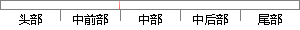

附加块有如下内容：标识符、块长度、哈希值；
片段位置图

相似结果|
1
原句片段：附加块有如下内容：标识符、块长度、哈希值；
相似片段 1：标识符以及压缩算法标识符附加到大约固定大小的块以 ...因此,没有备份或者存档在数据库中的文件内容或文件...所示,为每个大约固定长度的块计算块hash (哈希,散列...
|
※ 片段修改建议 ※
近似词参考：- 如下：以下
系统自动生成语句：附加块有以下内容：标识符、块长度、哈希值；
注：本片段修改建议为系统自动生成，仅供参考。